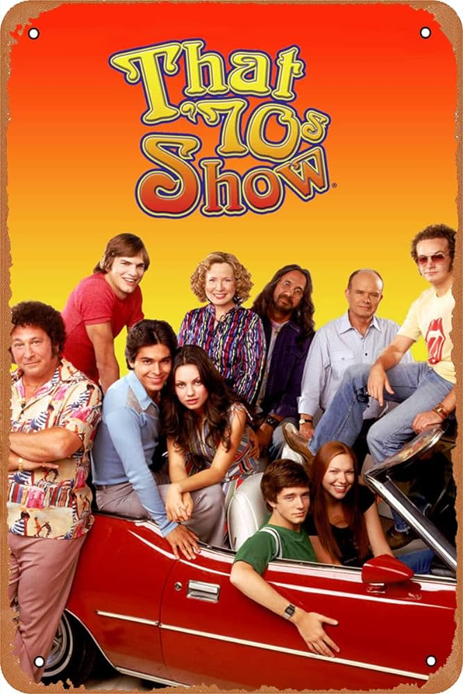
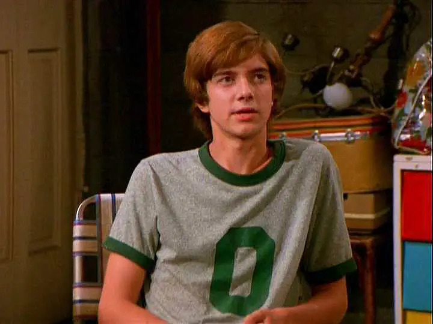
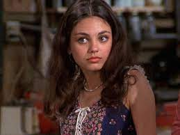
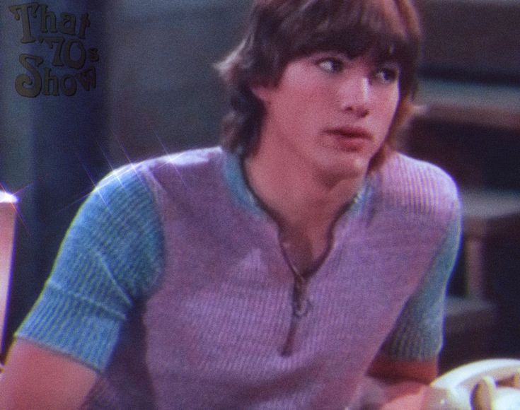

"That '70s Show" takes you back to the funky 1970s – mood rings, polyester, and all. It's about this cool gang of friends in Wisconsin, figuring out life on the edge of adulthood. They're all about chasing freedom and dealing with the bumpy ride of growing up, with a groovy, retro vibe.
CharactersEric Forman Played by: Topher Grace Jackie Burkhart  Played by: Mila Kunis Michael Kelso  Played by: Ashton Kutcher |